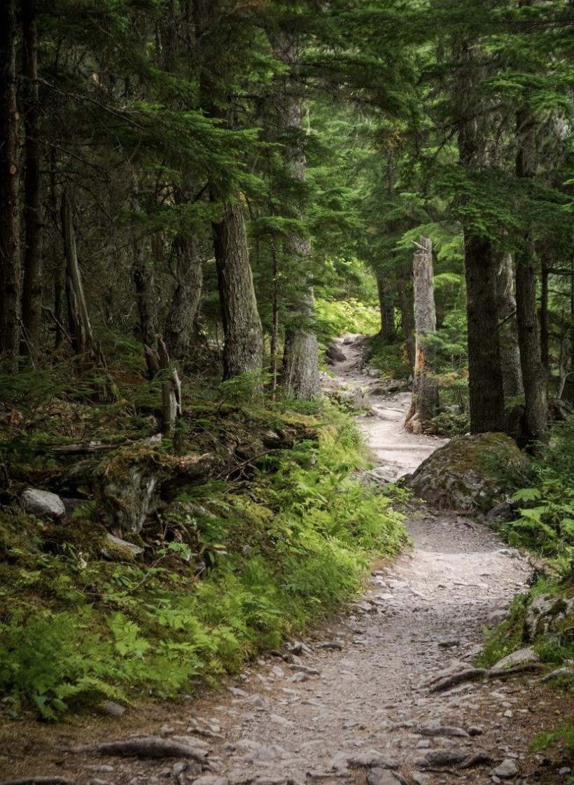
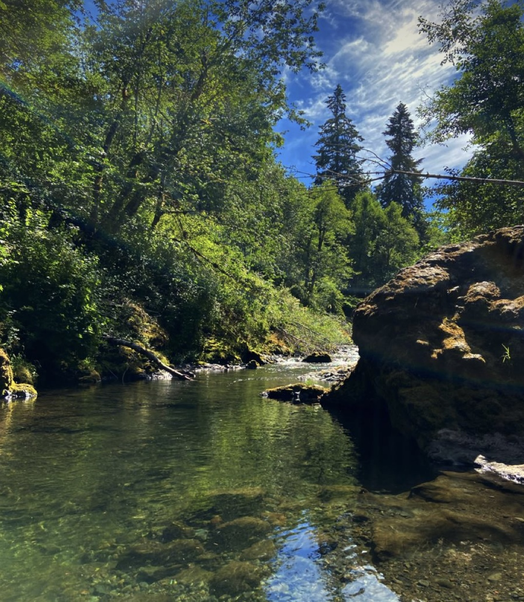
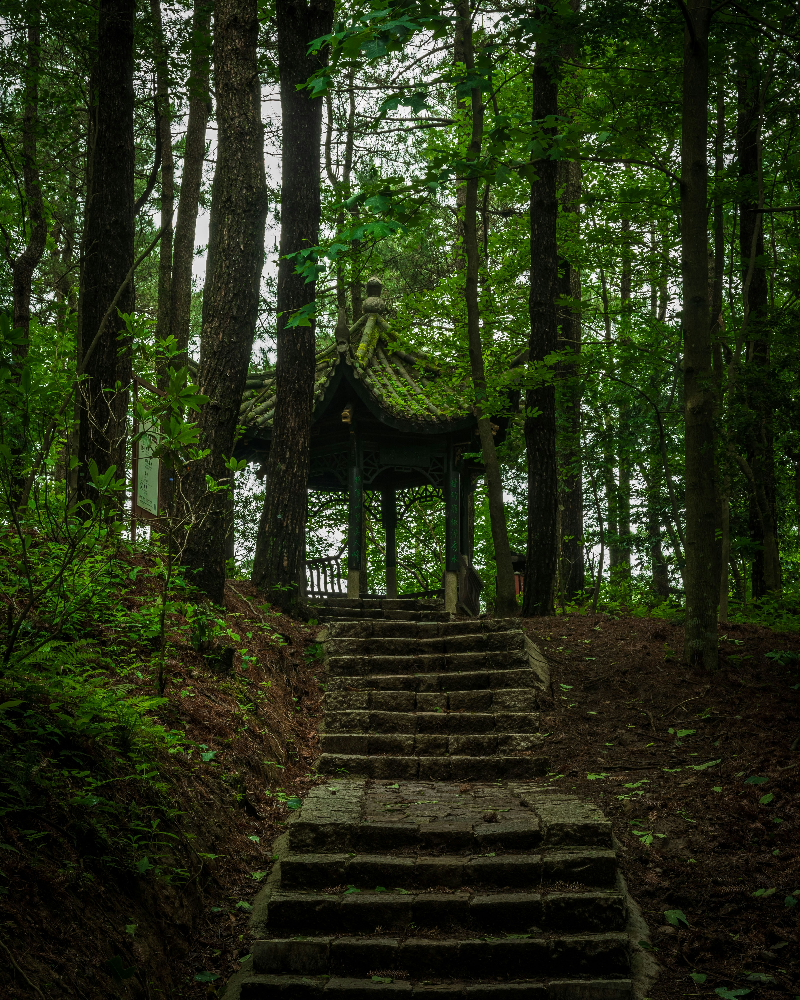

.jpg) |
Blossom Trail
As you meander down the Blossom Trail, be prepared to be enveloped by the sweet fragrance of blooming flowers. Cherry blossoms, tulips, and daffodils create a vibrant tapestry of colors, painting the landscape with hues of pinks, reds, and yellows. This trail is a photographer's dream during the spring season, capturing the essence of nature's annual rebirth. |
Serenity Path
The Serenity Path winds through a secluded grove, where the dappled sunlight filters through the canopy, creating a peaceful ambience. Listen to the gentle rustling of leaves and the soft whispers of the breeze as you find solace in the simplicity of nature. Benches along the way invite visitors to pause, meditate, and connect with the serene surroundings.
|
 |
|  |
Forest Explorer Trail
Embark on a sensory journey through the Forest Explorer Trail, surrounded by towering trees and the earthy aroma of the forest floor. This trail is a nature lover's paradise, with interpretive signs highlighting the diverse flora and fauna that thrive in Gladstone Garden. Keep an eye out for hidden clearings, perfect for picnics or bird-watching. |
Meadow Walk
The Meadow Walk unfolds like a vast, green carpet beneath your feet. Soft grasses sway in the breeze, and wildflowers add splashes of color to the landscape. This open expanse invites families to lay out a blanket, play games, or simply bask in the warmth of the sun. It's an ideal spot for a leisurely picnic or a lazy afternoon nap. |
.jpg) |
 |
Wildlife Discovery Trail
Nature enthusiasts will delight in the Wildlife Discovery Trail, where every step brings the possibility of encountering the park's inhabitants. Birdwatchers can spot various avian species, while the observant may catch glimpses of small mammals and insects. Bring your binoculars and camera to capture the diversity of Gladstone Garden's wildlife. |
Waterfall Trail
Follow the melodious sounds of rushing water along the Waterfall Trail. The trail gradually descends, revealing a picturesque waterfall nestled in a tranquil alcove. Surrounded by lush greenery, the waterfall creates a serene atmosphere, making it a perfect spot to unwind, reflect, and appreciate the beauty of nature. |
 |
|
Sunset Ridge LoopHead to the elevated Sunset Ridge Loop for a breathtaking panoramic view of Gladstone Garden bathed in the warm hues of the setting sun. This trail is particularly magical during the golden hour, providing a stunning backdrop for nature enthusiasts, photographers, and couples seeking a romantic evening stroll. |
Secret Garden Trail
The Secret Garden Trail leads you through winding pathways and hidden nooks, unveiling secluded pockets of beauty within Gladstone Garden. Discover enchanting sculptures, blooming archways, and tucked-away benches where you can escape the crowds and enjoy moments of quiet contemplation. |
 |
 |
Heritage Trail
Immerse yourself in the history of Gladstone Garden on the Heritage Trail. Educational markers tell the story of the park's development, its ecological importance, and the cultural significance of the surrounding area. This trail serves as both a recreational and educational experience, offering a deeper connection to the park's roots. |
Adventure Loop
The Adventure Loop is designed for the more adventurous souls, featuring challenging terrain, inclines, and rocky paths. Traverse through dense thickets and across wooden bridges, providing an adrenaline rush for hikers and nature enthusiasts seeking a more rugged and physically engaging experience in Gladstone Garden. Be prepared for an exhilarating journey with rewarding views along the way. |
|